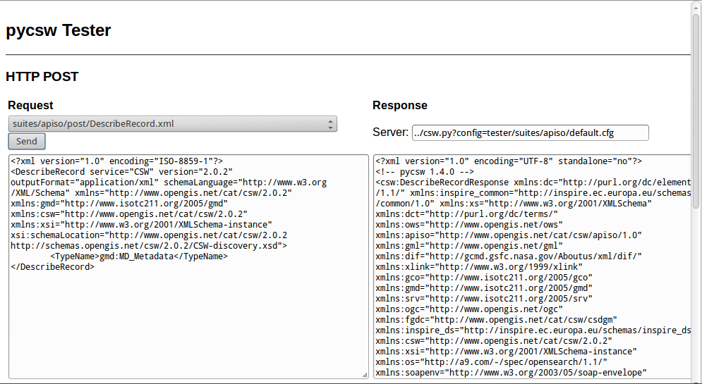

Inicio Rápido de pycsw¶
pycsw es una implementación de servidor OGC CSW escrita en Python. pycsw permite la publicación y el descubrimiento de metadatos geoespaciales. Los repositorios existentes de metadatos geoespaciales se pueden exponer a través de OGC:CSW 2.0.2 u OGC:CSW 3.0.0.
Ejecute la aplicación del probador¶
En el Escritorio vaya a Servicios web –> pycsw o abra Firefox y vaya a
http://localhost/pycsw/tests/index.html:
Al seleccionar la lista desplegable izquierda, el usuario puede ver varias solicitudes POST predefinidas, codificadas como XML, que se pueden enviar a pycsw.
Seleccione «apiso/DescribeRecord» y pulse el botón «Enviar». En el panel derecho se presenta una descripción del registro del perfil de aplicación ISO.
Seleccionar «GetCapabilities-SOAP» y pulsar el botón «Enviar». Se envía una solicitud SOAP al servidor para anunciar sus capacidades de servicio web.

Puede buscar registros de datos, realizar una consulta de cuadro delimitador espacial, seleccionando «GetRecords-filter-bbox» y editando las coordenadas en la solicitud XML.

{kind=link}
Puede ir a través de todas las solicitudes disponibles y realizar varias solicitudes desde esta aplicación de prueba.
Comprender las capacidades y la configuración¶
Las capacidades de la instalación de pycsw se pueden encontrar en http://localhost/pycsw?service=CSW&version=2.0.2&request=GetCapabilities . Si solo usa http://localhost/pycsw obtendrá el documento de capacidades para CSW 3.0.0, ya que es la última versión compatible.
Para editar los metadatos del servicio web, incluidos en el documento de capacidades, puede modificar el archivo /etc/pycsw/default.cfg bajo la etiqueta [metadata:main].
Si desea habilitar la compatibilidad con INSPIRE Discovery Service, rellene los metadatos bajo la etiqueta [metadata:inspire] y establezca la propiedad enabled en true.
Para todas las funciones y opciones de configuración, consulte la documentation en la página web pycsw.
Crear metadatos¶
Los archivos de metadatos para un conjunto de datos espaciales o un servicio web espacial se pueden crear a través de la implementación de código abierto de la directiva inspire para metadatos, European Open Source Metadata Editor (EUOSME). Esta aplicación se puede encontrar en http://inspire-geoportal.ec.europa.eu/editor/. El código fuente está disponible en https://joinup.ec.europa.eu/svn/euosme/trunk
Puede rellenar los campos de metadatos obligatorios pasando por las pestañas de la aplicación, agregando información como el nombre del propietario de los datos, las palabras clave, la ubicación de los recursos en la web, la ubicación geográfica (mediante un cuadro delimitador o el nombre de un país), etc.

Después de agregar toda la información disponible, pulse el botón validation en la parte superior de la página para comprobar la coherencia con la directiva INSPIRE.

Después de una validación exitosa, el archivo XML puede guardarse en el disco local y verse a través de un editor de texto o un navegador.
Cargar metadatos¶
pycsw es compatible con las siguientes bases de datos:
SQLite3
PostgreSQL (PostGIS opcional)
MySQL
En OSGeoLive, se implementó una configuración simple de SQLite. La base de datos se puede encontrar en /usr/share/pycsw/tests/suites/cite/data/records.db
Crear una nueva base de datos¶
Con el fin de crear una nueva base de datos SQLite necesitamos:
Editar
/etc/pycsw/default.cfg:[repository]
Base de datos: la ruta completa del archivo a la base de datos de metadatos, en formato URL de base de datos (consulte https://docs.sqlalchemy.org/en/latest/core/engines.html#database-urls)
table: el nombre de la tabla de registros de metadatos (el valor predeterminado es
records)
Configuración de la base de datos:
$ sudo pycsw-admin -c setup_db -f /etc/pycsw/default.cfg
Esto creará las tablas necesarias y los valores para el repositorio.
La base de datos creada es un Simple Feature Access (SFS) base de datos compatible, y se puede utilizar con cualquier software de implementación. Por ejemplo, para usar con OGR:
$ ogrinfo /path/to/records.db
INFO: Open of 'records.db'
using driver 'SQLite' successful.
1: records (Polygon)
$ ogrinfo -al /path/to/records.db
# lots of output
Importar metadatos¶
$ sudo pycsw-admin -c load_records -f /etc/pycsw/default.cfg -p /path/to/records -r
Esto importará todos los registros *.xml de``/path/to/records`` a la nueva base de datos y configurará el repositorio para exponer consultas consultables según la Tabla 53 de OGC:CSW.
Descubrimiento de datos a través del plugin QGIS MetaSearch¶
En el escritorio vaya a Desktop GIS –> QGIS para iniciar QGIS, luego haga click en el botón MetaSearch (ícono CSW)

Agregue el servidor pycsw pulsando el botón Nuevo y escriba
http://localhost/pycsw/

Agregue algunos servidores predeterminados usando el botón Agregar servidores predeterminados y también obtenga las capacidades del servidor usando el botón Información del servidor

Realice una búsqueda utilizando el catálogo, ya sea por un valor de cadena o con un cuadro delimitador

Cosas para probar¶
Intente descubrir datos a través de la aplicación Tester configurando las solicitudes apropiadas, por ejemplo. cualquier búsqueda de texto con la cadena «imagery» lleva a descubrir los datos xml creados previamente por EUOSME

Intentar descubrir los datos a través de la interfaz Python OWSLib CSW.
Intente descubrir datos de GeoNode, que también se incluye en OSGeoLive y utiliza pycsw como motor CSW predeterminado.
¿Qué sigue?¶
Para más información sobre pycsw, consulte el documentation en la página web pycsw.